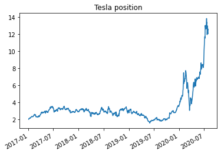
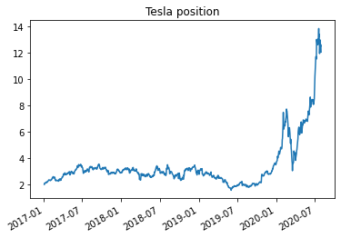

import numpy as np
import pandas as pd
%matplotlib inline
import matplotlib.pyplot as plt
# import regression package
9.3. Levering up and Shorting#
So far we wrote the portfolio return as simple product of weights and individual asset returns
where \(R\) is a a vector of riksy asset returns.
And \(W=[w_1,w_2,...w_I]\) is a vector of asset weights
In practice things are not quite as simple.
When \((1-\sum_i^Iw_i)\in[0,1]\) you have a postive fraction of your portfolio in the risk-free asset.
In this case you earn something close to the 3 month t-bill rate.
Leverage
When \((1-\sum_i^Iw_i)<0\) you have a negative weight on the risk-free asset.
This means that you are borowing money to invest more in the risky assets, mechanically \(\sum_i^Iw_i>1\).
What happens in this case?
No one will lend you money at the same rate the US gov get to borrow! They get to borrow at the lowest USD rates out there!
here are the lending rates of a big retail broker
Here is snapshot from May/2021
The structure of the rate is the following
The benchmark is something that is very close to the treasury rate
Here what your portfolio return looks like
so you earn rf is weight on the rf is positive, but pay rb if the weight is negative. Can rewrite as
so the spread compensate the broker for the risk it bears when it lends to you instead of lending to the US government
The broker when it lends to you ask the loan to be backed/collaterized by the assets in your portfolio (just like a house backs a mortgage)
this mean there will be a limit on your leverage. Typically this takes the following form
\(\sum_i^Iw_i\leq 1/m_{initial}\) and \(\sum_i^Iw_i<1/m_{maintenance}\) with \(1/m_{maintenance}>1/m_{initial}\)
For US retail investors \(m_{initial}=0.5\) and \(m_{maintenance}\) varies a bit
margin is exactly the inverse of gross leverage. When m=1, your gross leverage is 1/m=1 which means you cannot borrow anything
in this case for each dollar you have invested you have to put exactyl one dollar in.
when margin is 0.5, it means that your gross leverage is 1/0.5=2, which means that for each dollar you have you can buy 2 dollars in risky assets
so the bank lends to you another dollar for each dollar you put it
here is for a US retial broker. Focus on the top row, 50% initial , 30% maintenance, which translates to 1/0.5=2 initial leverage and 1/0.3=2.33 maintenance leverage
Example
lets say \(m_{initial}=0.5\) and \(m_{maintenance}=0.3\). Say you have 100k in your brokerage account and you can buy up to 200K in stocks. The broker lends to you 100k and hold the whole 200k in assets as protection. The value of your networth is still 100k. 200k in stocks -100k in the risk-free asset. For simplicity lets assume the risk-free rate is zero in this example.
Say your risk portfolio drops 30%, what is yout networth? risky portfolio 200*(-0.3+1)=140k, minus the 100k, you are now worth 140-100=40
This should not be surprising: You must absorb the entire loss
What is you risk-asset weight and how much you are borrowing as fraction of your worth?
(200/100,100/100)
(2.0, 1.0)
(140/40,100/40)
(3.5, 2.5)
40/140
0.2857142857142857
your leverage went from 2 to 3.5
You now have only 40/140=28% on marign
you are violating the maintenance constraint, which is 30%. What happens now?
your prime broker will ask for cash so you get back to 30%
To keep your 140 position you need to have 140*0.3=42 networth so you need to inject 42-40=2k.
What happens if you don’t inject the cash in time?
You will simply reduce your position in the risky asset to get back to the limit
This means that margin have to come down to \(0.3\times x=40\) and therefore you have to sell 140-40/0.3=140-133=7k of your risky asset position
Fire Sales
If you don’t do it your broker will certainly sell fro you and might even liquidiate your entire position
for example, here is from a retail broker
When the position to be sold is large, this can lead to very sharp price movements
The dealers does not care at all about the price that he sells for as long he can get his money
For example, back in March 2021 brokers liquidated a 21 billion dollar portfolio when the family office could not meet the margin call, i.e., the demand for cash. See, inside-archegoss-epic-meltdown
Other leverage constraints
In futures market, swap markets, and option markets you can get implicit leverage, often substantially more than in the cash market
It will vary wildly from market to market and in OTC markets this will depend on the relationship you have with your broker
For example the Achelegos fund was leveraged 10 to 1, so for each 1 dollar o networth they had 10 dollars of risky assets
Often this leverage constraint is given by sometype of risk-management at the portfolio level
For example, it is typical to make the amount of margin that you have to post depend on your portfolio volatility
This means that if volatilitiy goes up at the same time as your assets go down in value you face demand for cash both from your losses buy also from an increase in the margin you need to sustain your trade
9.3.1. Aplication: All in on Tesla#
Jackie is a complete believer on Tesla and decide to invest all her savings, 1 Million dollars on Tesla in early 2017, and lever up to the maximum allowed by it’s broker to 2 (inital margin 0.5), so a total position of 2 million dollars that she commited to stick with it.
The broker changed 1% on top of the tbill rate which was at zero.
The broker made clear that a fraction of the tesla shares would have to sold everytime leverage went above 1/0.3, i.e. a maintenance margin of 0.3 . The amount sold would have to bring the account margin back to 0.3.
We will now do a for loop that simulates the dealer margin re-balancing strategy
import pandas_datareader.data as web
import datetime as dt
df= web.DataReader("TSLA", "av-daily", start=dt.datetime(2017, 1, 2),
end=dt.datetime(2020, 8, 1),
api_key='N78MZQUK4ZCDUABU')
df.index=pd.to_datetime(df.index)
# construct close to close returns from price changes
df['return']=df['close'].pct_change()
df=df[['return']]
df
| return | |
|---|---|
| 2017-01-03 | NaN |
| 2017-01-04 | 0.046085 |
| 2017-01-05 | -0.001057 |
| 2017-01-06 | 0.009967 |
| 2017-01-09 | 0.009912 |
| ... | ... |
| 2020-07-27 | 0.086521 |
| 2020-07-28 | -0.040991 |
| 2020-07-29 | 0.015320 |
| 2020-07-30 | -0.007751 |
| 2020-07-31 | -0.038138 |
901 rows × 1 columns
val=1_000_000 # inital portfolio value
rl=0.01/252 #borrowing spread
m_initial=0.5 # Initial margin
m_maintenance=0.3 # maintenance/minimum margin
pos_RiskyAsset=1/m_initial*val
pos_SafeAsset=val-pos_RiskyAsset
W=pd.DataFrame([],columns=['Risky','Safe']) # containet to store portfolio overtime
d=df.index[0]
W.at[d,'Risky']=pos_RiskyAsset # position in Tesla at the start
W.at[d,'Safe']=pos_SafeAsset
print(W)
for d in df.index[1:]:
returnRiskyAsset=float(df.loc[d].values)
pos_RiskyAsset=pos_RiskyAsset*(1+returnRiskyAsset)
pos_SafeAsset=pos_SafeAsset*(1+rl)
networth= pos_RiskyAsset+ pos_SafeAsset
if np.sum(networth)<0: # sum of w0 gives us the networth. IF that goes negative, trader goes banktrupt and it is liquidated
W.at[d,'Risky']=pos_RiskyAsset # position in Tesla at the start
W.at[d,'Safe']=pos_SafeAsset
break
if networth/pos_RiskyAsset<m_maintenance: # accoutn is in breach and trader has to rebalance (sell some stock to satisfy their position limits)
print([pos_RiskyAsset,pos_SafeAsset])
pos_RiskyAsset=networth*1/m_maintenance
post_SafeAsset=networth-pos_RiskyAsset
print([pos_RiskyAsset,pos_SafeAsset])
W.at[d,'Risky']=pos_RiskyAsset
W.at[d,'Safe']=pos_SafeAsset
W
Risky Safe
2017-01-03 2000000.0 -1000000.0
[1706622.4249965441, -1024297.959301626]
[1705811.1642372953, -1024297.959301626]
[1648784.9646983622, -1024338.6060460426]
[1561115.8966307987, -1024338.6060460426]
[1688730.1647634946, -1024379.2544034254]
[1660877.275900173, -1024379.2544034254]
[1686528.2214318959, -1024419.9043738381]
[1655270.7926451443, -1024419.9043738381]
| Risky | Safe | |
|---|---|---|
| 2017-01-03 | 2000000.0 | -1000000.0 |
| 2017-01-04 | 2092170.14609 | -1000039.68254 |
| 2017-01-05 | 2089958.062584 | -1000079.366654 |
| 2017-01-06 | 2110788.5156 | -1000119.052343 |
| 2017-01-09 | 2131711.138762 | -1000158.739607 |
| ... | ... | ... |
| 2020-07-27 | 12963298.806432 | -1036194.481947 |
| 2020-07-28 | 12431918.066192 | -1036235.600776 |
| 2020-07-29 | 12622376.509295 | -1036276.721236 |
| 2020-07-30 | 12524537.114562 | -1036317.843328 |
| 2020-07-31 | 12046875.422376 | -1036358.967052 |
901 rows × 2 columns
(W.sum(axis=1)/1e6).plot(logy=False)
#(W['2017':'2020']['Asset']/1e6).plot(logy=False)
plt.title('Networth')
plt.figure()
(W['Risky']/W.sum(axis=1)).plot()
plt.title('Gross leverage')
plt.figure()
(W.sum(axis=1)/W['Risky']).plot()
plt.title('margin')
plt.figure()
(W['Risky']/val).plot(logy=False)
plt.title('Tesla position')
plt.figure()
((W.sum(axis=1)).pct_change().rolling(window=21).std()*252**0.5).plot()
plt.title('volatility')
Text(0.5, 1.0, 'volatility')
 

9.3.2. Shorting#
Shorting is conceptually very similar to leverage.
You borrow an asset and pay some lending fee to borrow it (perhaps this fee will be zero if there is ample supply).
And of course once you borrow you immediately sell and get the cash from the sale. The broker facilitating this transaction will typically ask you to keep some margin in you account.
We see in the top line of the margin requirement numbers that the margin requirements for shorting is set to 50% with the maintenance at 30%.
So this says that you need to have 50% of the value of your short position to start the trade, but this can go down to up to 30%.
This means that if you have 1 million in cash you can short at most 2 million of apple stock
you actually earn interest on this 3 million, but pay the shorting fee \(sf^i\) on the 2 million borrowed stock
here what your portfolio look like
where inital margin constraint implies that |w| has to be lower than 2.
and after the trade is initated is cannot go above 1/0.3
How does this work for a long-short trade?
Suppose you want a “market netural trade where you buy 1M worth of different fintech stocks and short 1M worth of banks. How much capital do you need?
to initiate the long-trade you will need 500k, 50% margin on 1M position
same thing for the short position, you will need 500 to satisfy the 50% marging
in the end your portfolio looks like (+1M Fintech,-1M Banks, 1M treasuries)
your 1 Million dollar still earns the risk-free rate
for someone that can fund themselves at the risk-free rate– or have money parked in treasuries anyways, the long-short is “costless” in terms of deployed capital
they don’t need to change any of their allocation to accomodate the long-short trade
In practice most arbitrageurs have the bare minimum in treasuries and have a much higher cost of funding then treasuries
Shorting fees
In the expression above \(sf^i\) is the shorting fee you pay per period to short, which typically is quoted in annualized terms and can change briskly over time.
Here is a snapshort of the fee to borrow GME stock early this year (the borrowing rate is in red)
A full portfolio looks like
Where \(\sum_i^I |w^i|\leq 1/m_{initial}\)
Application: Shorting GME
Now consider a big unconstraiend hedge fund that started shorting GME in March/2020 betting that COVID would drive GME into bankruptcy.
Assumptions about how they will trade
they inject cash as nedded in the trade.
We will then track their capital commited to the trade and their dollar “P&L” , i.e the dollars profits/losses of the trade.
We will start assuming shorting fee is zero for simplicty
We will start with capital of 1 million and inject capital as the bank demands capital, and cash out whenever my leverage goes down below the initial leverage limit
df= web.DataReader("GME", "av-daily", start=dt.datetime(2017, 1, 2),
end=dt.datetime(2021, 11, 1),
api_key='N78MZQUK4ZCDUABU')
df.index=pd.to_datetime(df.index)
df['return']=df['close'].pct_change()
df=df[['close','return']]
df[:'2020-3'].close.plot()
<AxesSubplot:>
#Keep returns going forward (starting in april 2020)
df=df.loc['2020-4':,['return']]
df
| return | |
|---|---|
| 2020-04-01 | -0.071429 |
| 2020-04-02 | -0.123077 |
| 2020-04-03 | -0.017544 |
| 2020-04-06 | 0.103571 |
| 2020-04-07 | 0.058252 |
| ... | ... |
| 2021-10-26 | 0.022245 |
| 2021-10-27 | -0.024348 |
| 2021-10-28 | 0.053830 |
| 2021-10-29 | 0.003610 |
| 2021-11-01 | 0.090349 |
401 rows × 1 columns
val=1_000_000 # inital capital
m_initial=0.5
m_m_maintenance=0.3
sf=0/252# shorting fee
rf=0/252 # tbill
pos_RiskyAsset=-1/m_initial*val # it is negative becasue you are shorting!
pos_SafeAsset=val-pos_RiskyAsset
W=pd.DataFrame([],columns=['Risky','Safe']) # containet to store portfolio overtime
d=df.index[0]
W.at[d,'Risky']=pos_RiskyAsset # position in Tesla at the start
W.at[d,'Safe']=pos_SafeAsset
W.at[d,'injected capital']=val
print(W)
for d in df.index[1:]:
pos_SafeAsset=pos_SafeAsset*(1+rf)+pos_RiskyAsset*sf
returnRiskyAsset=float(df.loc[d].values)
pos_RiskyAsset=pos_RiskyAsset*(1+returnRiskyAsset)
networth= pos_RiskyAsset+ pos_SafeAsset
W.at[d,'injected capital']=0
if networth/np.abs(pos_RiskyAsset)<m_maintenance: # if you breach the maintanece margim
neededcapital=(np.abs(pos_RiskyAsset)*m_maintenance-networth)
W.at[d,'injected capital']=neededcapital # how mcuh capital is injected in the trade
pos_SafeAsset=pos_SafeAsset+neededcapital # change in the risk-free positions
W.at[d,'Risky']=pos_RiskyAsset # position in Tesla at the start
W.at[d,'Safe']=pos_SafeAsset
W
Risky Safe capital
2020-04-01 -2000000.0 3000000.0 1000000.0
| Risky | Safe | capital | |
|---|---|---|---|
| 2020-04-01 | -2000000.0 | 3000000.0 | 1000000.0 |
| 2020-04-02 | -1753846.153846 | 3000000.0 | 0.0 |
| 2020-04-03 | -1723076.923077 | 3000000.0 | 0.0 |
| 2020-04-06 | -1901538.461538 | 3000000.0 | 0.0 |
| 2020-04-07 | -2012307.692308 | 3000000.0 | 0.0 |
| ... | ... | ... | ... |
| 2021-10-26 | -109440000.0 | 299393230.769231 | 0.0 |
| 2021-10-27 | -106775384.615385 | 299393230.769231 | 0.0 |
| 2021-10-28 | -112523076.923077 | 299393230.769231 | 0.0 |
| 2021-10-29 | -112929230.769231 | 299393230.769231 | 0.0 |
| 2021-11-01 | -123132307.692308 | 299393230.769231 | 0.0 |
401 rows × 3 columns
3*0.3
0.8999999999999999
(W.sum(axis=1)/val).subtract((W.capital/val).cumsum(),axis=0).plot(logy=False)
#(W['2017':'2020']['Asset']/1e6).plot(logy=False)
plt.title('P & L')
plt.figure()
(W.capital/val).plot(logy=False)
#(W['2017':'2020']['Asset']/1e6).plot(logy=False)
plt.title('Capital injections')
plt.figure()
(W.capital/val).cumsum().plot(logy=False)
#(W['2017':'2020']['Asset']/1e6).plot(logy=False)
plt.title('Capital')
plt.figure()
((W.sum(axis=1)).pct_change().rolling(window=21).std()*252**0.5).plot()
plt.title('vol')
Text(0.5, 1.0, 'vol')


Suppose you were a hedge fund with 200M capital, you placed a fairly small 1 million dollar trade. You were fully commited and thought you had the capital to support the trade
By late january sustaining the trade required 300 million dollars!
And this does not take into account the fact that margin requirements became much tighter due to the immense volatiltiy of GME stock in the period.
You can see above that the volatiltiy of the fund net position went to 1,200%!
As response to this retail brokers increase margin requirements on GME shorts to 300% (from 50%). So to sustain 1 dollar of a short position you need to put 3 dollars instead of 50 cents.
I am not sure what institutional brokers did, but likely they increased their leverage reuqirements too.
This implies required capital would increase 6 foldfold (from 0.5 to 3 initial margin) going from 300 million to 1.8 billion dollars!
1.8 Billion dollars to sustain the 1 million dollars trade!